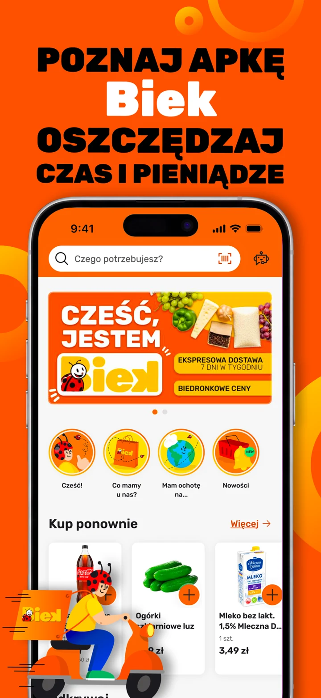

hires who stayed for years, from 30+ recruitment processes
~99%
lower mobile CI costs, about $20k saved annually
~80%
lower analytics costs after migration to Mixpanel
40+
LE34 iOS apps on five white-label foundations
At Doktor.se I lead a 10-person mobile engineering organisation alongside the cross-functional Consultation & Treatment team. Together these roles cover close to 20 people on platforms with 1M+ registered users per mobile platform.
Through appBEAT I helped win the tender for BIEK by Biedronka, built and led the core mobile team, co-created its architecture and defined its API contracts. The app launched nationally in November 2026.
Engineering judgment
I connect technical decisions to cost, operations and business outcomes, from a healthcare marketplace proposal to about 99% lower CI costs and roughly $20k saved per year.
Hands-on delivery
I deliver mobile features end to end: iOS natively, Android hands-on with AI assistance, plus AI-assisted bug fixes across the stack.
Team development
I hired about 10 people who stayed for years through 30+ recruitment processes, and introduced structured discovery and technical kick-offs so engineers start with well-prepared tasks.
Domains
Healthcare, banking, retail, mobility, geospatial, consumer and social apps, interactive media and games.
Hands-on technologies
Swift, iOS, Kotlin Multiplatform, Android, Objective-C, tvOS, macOS, API contracts, CI/CD automation and AI-assisted spec-driven development.
Leadership
Hiring, team building, discovery, estimation, delivery planning, stakeholder management, technical due diligence, vendor and cost management, engineering governance.
“Discussions with Michal end in actual agreements, with expectations everyone understands the same way, which removes an enormous amount of friction.”
Erik Sandström / Former manager at Doktor.se
Career timeline
2011
2012
2013
2014
2015
2016
2017
2018
2019
2020
2021
2022
2023
2024
2025
2026
Ars Thanea (SYZYGY)
Jul 2014 – Aug 2015
iOS Developer, Warsaw
Airnauts.com
Aug 2015 – Apr 2016
iOS Developer, Warsaw
LE34 via ProData Consult
Apr 2016 – Apr 2020
appBEAT contract; Lead iOS Developer
PKO Bank Polski / IKO
Apr 2020 – Jul 2021
Senior iOS Developer
Doktor.se
Jul 2021 – Feb 2022
Senior iOS Developer
Doktor.se
Feb 2022 – Feb 2024
Engineering Manager, Professional Services
Doktor.se
Feb 2024 – present
Engineering Manager & App Lead, in parallel
appBEAT
Apr 2016 – present
Founder, product & engineering consultant
Client engagements alongside primary rolesBIEK
Milestones
1234
Individual contributor
Engineering leadership
Consultancy, in parallel
1
2011 First published iOS app: Easy Visitor Tracker
2
2022 Promoted to Engineering Manager within 7 months
3
2023 Self-hosted CI/CD: ~99% lower cost
4
2024 App Lead and Engineering Manager in parallel
Selected case studies
Doktor.se
One mobile platform behind a family of healthcare apps
Doktor.se, Sweden (remote) · Jul 2021 – present · Senior iOS Developer, then Engineering Manager and App Lead
Doktor.se provides digital and on-site care across Sweden. Its patient app shares one codebase with a family of brand and customer apps, including Doktor.de, AniCura and Belgium's Doktr. Around it sit a clinician app and a back-office app for coordinators, used in clinics across the country.
Promoted from Senior iOS Developer to Engineering Manager within 7 months. Since 2024 I have led two scopes in parallel: App Lead for the 10-person mobile engineering organisation and Engineering Manager for the cross-functional Consultation & Treatment team. I stay hands-on, leading core mobile features from planning to production.
One architecture for every iOS developer.
Testable logic and shared practices via a modular Clean Architecture; owned releases from QA to the App Store.
No impact on active users.
Through long-running shared-SDK migrations, using feature flags, Git branching and deployment automation.
A new revenue stream.
Yearly health checks, from the booking system my team built: recurring bookings automated, health forms collected before the visit.
Minutes back for doctors.
On every patient case, by leading the team that integrated an external EHR system.
Hands-on revenue.
Several dozen tests sold in the first month (Q1 2026) in the Health Checks store I built myself.
Executive partnership.
A fellow Engineering Manager and I shared responsibilities previously held by the CTO. I work directly with the CEO.
1M+
registered users per mobile platform, iOS and Android
appBEAT client engagement · Aug 2024 – Mar 2026 · Mobile engineering lead
The app brings grocery delivery to customers of Biedronka, Poland’s largest retailer. I joined the bid team to shape the mobile proposal and stayed until March 2026, with most features in place.
I helped win the tender, built and led the core mobile team, co-created the architecture with fellow engineers and defined the API contracts. I also contributed code alongside my Doktor.se role.
Tender won, MVP scope agreed.
By assessing the RFP, estimating the work, holding the technical discussions with the business partners and presenting delivery options from an MVP to full scope, with the staffing, dependencies and trade-offs for each.
Logic written once, native UIs.
Business logic shared by iOS and Android with fully native SwiftUI and Jetpack Compose interfaces, by choosing Kotlin Multiplatform over Compose Multiplatform, then still in beta.
Months unblocked before the backend.
Complete shopping flows built and tested on in-memory providers, by defining the API contracts and a contract-first workflow. Moving to the real API meant swapping a provider, not rewriting screens.
Tender
won with my RFP assessment, estimates and technical input
iOS + Android
KMP shared business logic, native interfaces
Nov 2026
National app launch
Kotlin Multiplatform, SwiftUI, Jetpack Compose, REST & WebSockets via BFF, Ktor, Koin, Coroutines & Flow, Design system
The client expanded the contracted scope.

Shop for groceriesTrack an orderChoose a delivery windowBuy favourites againPlay Moto-Moto
End-to-end encryption without breaking the chatbot
Doktor.se Professional Services · client: Doktr, Belgium · 2023 – Feb 2024 · Engineering Manager
Doktr, a Belgian digital-health app built on Doktor.se's white-label platform, faced a new legal requirement: without end-to-end encryption for patient–doctor conversations, it could not keep operating in Belgium. Every other customer had to keep the existing behaviour, and the chatbot used patients' answers to decide each next step.
I guided the work from feasibility to production release, with the Product Manager and the engineering teams. Before that, as an iOS developer, I implemented features for Doktr and published its releases.
A confirmed path to encryption.
Across backend, web and mobile apps before any build, by leading the SealdSDK feasibility assessment on top of an external discovery.
Customer sign-off.
On the solution and its limits, by presenting the options, trade-offs and alternatives directly to the Product Manager and the customer.
Routing kept, privacy gained.
The chatbot kept routing conversations while coordinators lost access to sensitive answers, by helping define protected questions.
Released with safeguards.
External penetration testing, monitoring and dashboards in place, after coordinating changes to support procedures, clinician workflows and mobile UX, and recording the decisions in two Architecture Decision Records.
Compliant
Doktr's app stayed on the Belgian market
Unchanged
behaviour for every other customer on the platform
Pen-tested
externally, with monitoring and dashboards in place
The chatbot reads patient answers to select the next step. Encrypting every answer at source would break routing.
Chosen option
Seald SDK protects patient–doctor conversations. Answers to protected bot questions stay processable for routing, hidden from coordinators and non-medical roles, and available to treating clinicians.
Decision and ownership
I assessed the options and recommended the solution. The customer accepted it. Developers owned implementation and code architecture.
Release safeguards
Two Architecture Decision Records, edge-case scenarios, unit tests, external penetration testing, Datadog monitoring and Amplitude dashboards.
iTaxi
Modernising a legacy iOS app for a major redesign
appBEAT client engagement · iOS delivery lead
iTaxi, one of the leading consumer mobility platforms in Poland, planned a major product redesign. The new experience had to land on a legacy iOS codebase.
I led iOS delivery for the redesign, from modernising the codebase to supporting the client through validation and release.
Ready for a major redesign.
A legacy codebase prepared for the new experience, by modernising its architecture and adding tests.
A consistent new experience.
By extracting reusable components and turning the new designs into working product features.
Released after validation.
The redesign reached the App Store after Friends & Family validation, with my support through to release.
3.5 → 4.8
App Store rating after the redesigned release, a team and client result
LE34, via ProData Consult · Apr 2016 – Apr 2020 · Lead iOS Developer, co-founder of the mobile department
LE34 builds geospatial solutions for municipalities, surveying and field operations. Its customers needed apps for citizen reporting, map editing, surveying and live tracking of field crews, including variants for individual municipalities.
I co-created the mobile department and acted as Lead iOS Developer, taking products from first idea to the App Store and maintaining them afterwards.
40+ apps from five foundations.
Including municipal variants such as Furesø Borgertip, by building white-label foundations for reuse.
Customer ideas published.
By running customer workshops and prototypes, API contract design, estimation, implementation, testing, App Store publication and maintenance.
One pipeline for the portfolio.
A single distribution pipeline for every app, built with Jenkins, fastlane and Firebase / Fabric.
40+
iOS apps in the portfolio, including customer variants
Contributed across the development lifecycle of new iOS features for PKO Bank Polski's consumer mobile banking app, delivered core application solutions and presented new functionality to business partners.
Developed the tvOS app and its iOS companion controller, including phone-to-Apple TV communication: On-Demand Resources, focus-based navigation, service discovery and a custom InputStream-based server.
Created and refined the UI, improved responsiveness and animation smoothness, designed and implemented new features, and advised on and integrated the mobile backend.
Puzzle Craft 2, Frytkę?, BoboVita and Puzzle Craft.
TwigaApp
Social, location-based chat
Built location-based individual and group chat and the app's backend.
Firebase, GeoFire, Swift, Objective-C
Alif
Social, friends & dating
Implemented the native Swift social application.
Swift, iOS
POLIN Museum: Śladami Korczaka
Museum, augmented reality
Created the educational museum app from scratch, with augmented reality and photo editing.
Swift, AR
Frytkę?
Side project, coupons
Built from scratch to learn Swift 1.0, with a Google App Engine backend, analytics and crash reporting.
Swift, App Engine, Crashlytics
Puzzle Craft
iPhone game, specialist integration
Publisher SDK and Game Center integrations, plus 64-bit porting, within the game team.
Objective-C, Game Center
Puzzle Craft 2
iPhone game, specialist integration
Publisher SDK and Game Center integrations, plus 64-bit porting, for the sequel.
Objective-C, Game Center
Another Case Solved
iPhone game, Chillingo
Publisher SDK and Game Center integrations, plus 64-bit porting.
Objective-C, Chillingo SDKs
BoboVita / New Bobovita
Branded app
Created New Bobovita from scratch.
Objective-C
Jägermeister
Branded app
Created the iOS app from scratch.
Objective-C
Yasu
Mobile app
Created the iOS app from scratch.
Objective-C
CommuteSurf
Competition, 2013
Founded the project and led the team to 2nd place in the Polish stage of Microsoft Imagine Cup 2013.
Team leadership
Easy Visitor Tracker
First published iOS app, 2011
iPhone and iPad app tracking webpage visits through an embeddable image; 25,000+ users.
iOS, iPhone, iPad
My game credits cover publisher integration and porting work within the development teams.
Engineering and product impact
Engineering systems and economics
~99%
lower mobile CI/CD cost
Doktor.seFeb 2023, in use 3+ years
Challenged a ~$1,700/month external macOS build service. Analysed real usage, then designed and introduced self-hosted Mac mini runners that kept automated builds and releases running, saving roughly $20k a year.
~80%
lower analytics cost
Doktor.seproduct analytics
Led the analytics transformation: event taxonomy, tracking rules, reporting standards and dashboards. Initiated the Amplitude-to-Mixpanel evaluation and migration, keeping the capabilities teams needed.
Cutover
GA4 to Amplitude, on schedule
Doktor.secross-team migration
Introduced Amplitude with a shared event taxonomy, cleaned up events and gave every team a migration guide. Verified ingestion in staging; a forced app update completed the scheduled GA4 cutoff.
Legal compliance
open-source licences across 169 repositories
Doktor.seMay – Sep 2022
Initiated repository ownership and open-source licence governance across several stacks, with pre-merge licence checks coordinated with code owners and approved by the technology leadership forum.
~80%
faster QA-to-fix, best case
Doktor.seMay 2026 – present
Built the MCP integrations plugging Linear, Jira, Figma, Slack, Lokalise and Amplitude into the AI agent workflow, and co-designed the process it automates. Adopted across engineering, then QA.
30+
cross-stack fixes in 8 repositories
Doktor.seAI-assisted, spec-driven
Shipped 30+ Node.js, JavaScript, TypeScript and Python bug fixes across company repositories with AI-assisted workflows, freeing up the engineers.
No impact
on active users through SDK migrations
Doktor.seshared white-label platform
Kept every customer app and system running across shared-SDK versions with feature flags, branching and deployment automation, plus Datadog monitors, alerts and rollback plans for major changes.
One
architecture for every iOS developer
Doktor.seJul 2021 – Feb 2022
Introduced a modular Clean Architecture and SOLID foundation: business logic became testable, shared practices replaced individual approaches, and the app became easier to maintain.
Product, business and client impact
Strategy
from white-label SDK to marketplace
Doktor.se2022–2023
Helped shift Doktor.se toward a product-facing healthcare marketplace with a self-initiated strategy proposal, developed with the CEO, Business Manager, Product and Design. It led to the Health Checks store.
New revenue
from yearly health checks
Doktor.seConsultation & Treatment team
My team's booking system made them possible. It automated recurring bookings for coordinators and collected the yearly health form before the visit, so doctors spend the visit on diagnosis and advice.
Minutes
back to doctors on every patient case
Doktor.seEHR integration
Led the team that integrated an external electronic health record system, automating documentation that doctors had filled in by hand, so more of their day goes to treating patients.
70%
conversion for the winning paywall
Doktor.seA/B testing
Of the 20+ A/B tests I designed and evaluated on Confidence, one settled the paywall content on a variant that converted in 70% of cases, well ahead of the alternatives.
~$16k
saved on A/B testing over three years
Doktor.sevendor negotiation
Negotiated free use of Spotify's Confidence experimentation platform, worth $449 a month, in exchange for product feedback; designed and evaluated 20+ A/B tests on it.
More
completed onboardings, less churn
Doktor.seproduct analytics
Data showed that asking for an email the app could collect later raised drop-off by 40%. Removing that step significantly improved install-to-registration conversion; the email moved later in the journey.
Risk avoided
acquisition dropped after due diligence
Doktor.seM&A
Led the on-site technical assessment and found no proprietary technology: the target's value sat in undocumented staff know-how. My recommendation led leadership to drop the acquisition.
Roadmap
for a feature redesign from my prototype
Doktor.seuser journeys
On top of daily work, prototyped a redesigned home page that tested the constraints the team had assumed, leading to a less constrained design of the new feature.
0-to-1
mobile apps for US clients
appBEATarchitecture to maintenance
Made the initial architecture decisions, designed the API contracts, built iOS hands-on, led the Android developer and owned publishing; then ran maintenance with offshore developers in Dubai.
“Michal consistently looked beyond implementation itself and considered cost, operational efficiency and the wider impact of technical decisions.”
Viktor Arcini Sjöberg / Head of Product, Doktor.se
Recommendations
Excerpts from LinkedIn recommendations.
“I promoted Michal at Doktor.se because he was already operating well beyond his formal role. He is one of very few engineering leaders I've worked with who instinctively thinks like an owner of the business, not just of the technology…”
Erik SandströmFormer manager at Doktor.se; CTO & Co-founder, Bardo Technology
“Michal has a strong ability to take complex business or clinical problems and turn them into concrete product and technology initiatives. He worked effectively with senior leadership, product teams, engineers and clinical stakeholders, and was often able to bring structure and technical perspective to discussions that initially started as business problems.”
Viktor Arcini SjöbergHead of Product, Doktor.se
“It's rare to find someone who combines deep technical skill with such a broad, business-minded outlook. Michal is highly competent in his craft — his iOS expertise is a go-to reference point for the whole team, and he consistently brings creative, innovative ideas to the table rather than just executing what's asked of him.”
Karin BergströmHead of Product and Medical Doctor, Doktor.se
“Michał has a lot of hands on experience in building and developing application teams, from discovery and estimation to recruitment, architecture and delivery. And when we needed extra support, he usually knew the right person to bring in.”
Michał ŁukawskiClient; Head of Growth, SYZYGY; co-founder, adcourt
“I had the pleasure of working closely with Michal, and I can confidently say he is one of the most effective Engineering Managers I've collaborated with. He combines strong technical knowledge with exceptional leadership skills, creating an environment where engineers feel both challenged and supported.”
Bojan MarkovićSenior iOS Developer, Doktor.se
“Whenever tougher challenges or crucial decisions came up, Michał was always there. He has the traits of a true, modern leader: he knows how to structure a process, take care of his team, listen to others, and take ownership when the situation calls for it.”
Agnieszka MalikProduct Designer, SYZYGY team on BIEK